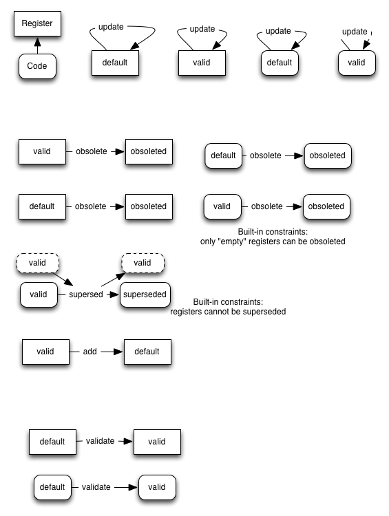

HOW-TO configure a process
A process can be configured as a set
of states and transitions (change of states resulting from actions).
The system hard-code special behavior only for a few states and and
actions.
States
The states that have a special treatment in the system are :
http://metarelate.net/states/osboleted : the obsolete state
http://metarelate.net/states/superseded : the superseded state (obsoleted and "replaced" by another term)
http://metarelate.net/states/default : a default state
These state can be overridden with different states for specific
processes, and new states can be declared by typing the corresponding
resource as http://metarelate.net/config/State .
The following example, taken by the default configuration, overrides the system states and introduce a new valid state,
states:obsoleted a config:State;
rdfs:label "Obsoleted"@en;
config:overrides states:obsoleted;
.
states:superseded a config:State;
rdfs:label "Superseded"@en;
config:overrides states:superseded;
.
states:default a config:State;
rdfs:label "Default"@en;
config:overrides states:default;
.
states:valid a config:State;
rdfs:label "Valid"@en;
.
Actions
As for states, the system assign a special meaning to a few actions.
These can be overridden, and new actions can be defined with a simple
declaration (see the default configuration for examples).
The "systems actions" are:
http://metarelate.net/actions/updates
http://metarelate.net/actions/obsolete
http://metarelate.net/actions/supersed
http://metarelate.net/actions/add
In the default configuration, an extra validate action is introduced.
Transitions
Transitions describe under which conditions an action can take place,
and the resulting state of involved entity (no transition is
hard-coded, even if related to system states or actions).
Transitions are specified as follows:
To each action, one ore more resources of type http://metarelate.net/config/role can be associated.
Each role describes a set of pre/post conditions that apply to the
action. Roles can be associated to actions via two different
properties: http://metarelate.net/config/hasEffectOnCode and http://metarelate.net/config/hasEffectOnRegister. If the actions has a register as a target, the state transitions linked via http://metarelate.net/config/hasEffectOnRegister apply to the register, while if the target of the operation is a code, the transitions linked via http://metarelate.net/config/hasEffectOnCode are used.
Each role presents a four preconditions and four post-conditions:
http://metarelate.net/confi/preThis : the precondition for the state of the entity target of the operation
http://metarelate.net/confi/preUp : the precondition for the register defining the entity target of the operation
http://metarelate.net/confi/preDown : the precondition for entities defined in the entity target of the operation
http://metarelate.net/confi/preAux : the precondition for the state of an external entity involved in the operation (e.g. a superseding term).
The system looks at the state of the target of the action and related
entities, then when it finds a matching pre-condition it updates states
as specified in by the corresponding four post-condition properties.
http://metarelate.net/confi/postThis
http://metarelate.net/confi/postUp
http://metarelate.net/confi/postDown
http://metarelate.net/confi/postAux
When no property is specified, matching is considered "any" in the pre-conditions, and unchanged in the post-conditions.
Note that the implementation of preUp and preDown is not currently
complete (only partial checks are done, and it is yet to be defined
whether the pre-condition check should transitively propagate the
definition structure or not).
Default configuration
@prefix config: <http://metarelate.net/config/> .
@prefix states: <http://metarelate.net/states/> .
@prefix actions: <http://metarelate.net/actions/> .
@prefix default: <http://metarelate.net/default/config/> .
@prefix rdfs: <http://www.w3.org/2000/01/rdf-schema#> .
actions:update a config:Action;
rdfs:label "Update"@en;
config:overrides actions:update;
config:hasEffectOnCode default:actionUpdate1;
config:hasEffectOnCode default:actionUpdate2;
config:hasEffectOnReg default:actionUpdate1;
config:hasEffectOnReg default:actionUpdate2;
.
default:actionUpdate1 a config:Role;
config:preThis states:default;
config:postThis states:default;
.
default:actionUpdate2 a config:Role;
config:preThis states:valid;
config:postThis states:valid;
.
actions:obsolete a config:Role;
rdfs:label "Obsolete"@en;
config:overrides actions:obsolete;
config:hasEffectOnCode default:actionObsolete1;
config:hasEffectOnCode default:actionObsolete2;
config:hasEffectOnReg default:actionObsolete1;
config:hasEffectOnReg default:actionObsolete2;
.
default:actionObsolete1 a config:Role;
config:preThis states:default;
config:postThis states:obsoleted;
.
default:actionObsolete2 a config:Role;
config:preThis states:valid;
config:postThis states:obsoleted;
.
actions:supersed a config:Action;
rdfs:label "Supersed"@en;
config:overrides actions:supersed;
config:hasEffectOnCode default:actionSupersed1 ;
.
default:actionSupersed1 a config:Role;
config:preThis states:valid;
config:preAux states:valid;
config:postThis states:superseded;
config:postAux states:valid;
.
actions:add a config:Action;
rdfs:label "Add"@en;
config:overrides actions:add;
config:hasEffectOnReg default:addAction1 ;
config:hasEffectOnReg default:addAction2 ;
.
default:addAction1 a config:Role;
config:preThis states:valid;
config:postThis states:default;
.
default:addAction2 a config:Role;
config:preThis states:default;
config:postThis states:default;
.
actions:validate a config:Action;
rdfs:label "Validate"@en;
config:hasEffectOnReg default:validateAction1 ;
config:hasEffectOnCode default:validateAction1 ;
.
default:validateAction1 a config:Role;
config:preThis states:default;
config:postThis states:valid;
.
states:obsoleted a config:State;
rdfs:label "Obsoleted"@en;
config:overrides states:obsoleted;
.
states:superseded a config:State;
rdfs:label "Superseded"@en;
config:overrides states:superseded;
.
states:default a config:State;
rdfs:label "Default"@en;
config:overrides states:default;
.
states:valid a config:State;
rdfs:label "Valid"@en;
.
The default state transition can be visualized pictorially as follows
